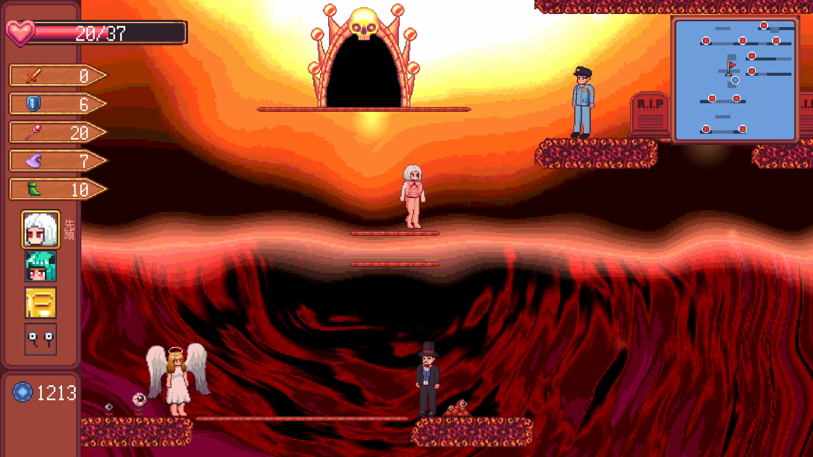

URP、ShaderGraphを利用し、ハイクオリティなグラフィックを実現
絵、3Dモデル、UIの作成などはデザイナーの仕事ですが、デザイナーが仕上げてくれたデータを利用するのはプログラマです。
デザイナーの思った通りのグラフィックに仕上げるには、プログラマもデザイナーの知識を取り入れるべきではと思い、 Unity上でハイクオリティなグラフィックを実現できるURP(Universal Render Pipeline)というレンダリングパイプラインについて勉強しました。
自分のポートフォリオ内にあるゲームのほぼ全てにURPやShaderGraphが使われています。
 |
 |
こういったグラフィックを実現するために利用している機能として、
- ShaderGraph
- Light2D
- Renderer Feature
などが挙げられます。
今回はShaderGraph解説していきます。
ShaderGraphについて
シェーダーは手描きでは難しい動きのあるグラフィックを作るのが得意で、自分は主に背景やオーラをまとうボスキャラなどに利用しています。
|
|
|
シェーダーグラフは通常のシェーダーと違いノードベースで組み立てることで作成します。
通常のシェーダーのほうが柔軟で多様な模様を作ることができますが、CustomFunctionノードを利用することで、シェーダーグラフ内にHLSLシェーダーを利用することができます。
(HLSLは現在勉強中です。)
ZoomVoronoi.hlsl